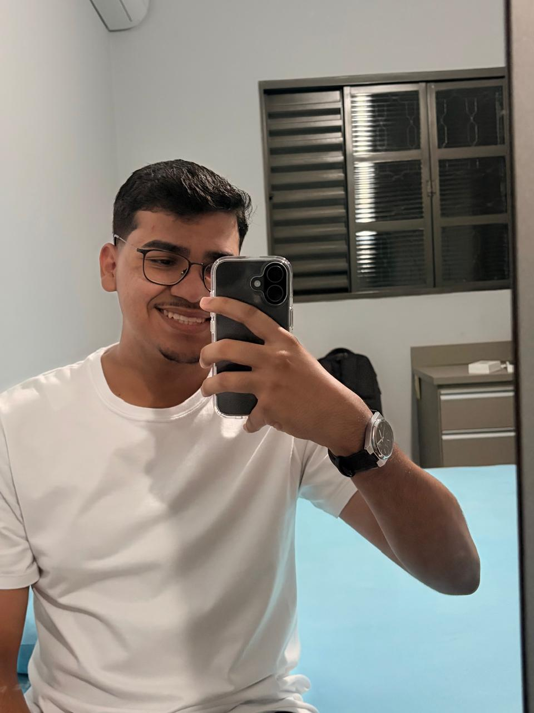

01 / FORMAÇÃO TÉCNICA
Concluída
Curso técnico
Desenvolvimento de Sistemas
COTIL · UNICAMP
A base técnica que marcou meu início na área de tecnologia e desenvolvimento.
Construindo soluções, uma linha por vez
Estudante de Sistemas de Informação e técnico em Desenvolvimento de Sistemas. Gosto de transformar ideias em aplicações úteis e aprender construindo projetos reais.

01 / SOBRE MIM
Minha formação combina uma base técnica em Desenvolvimento de Sistemas com a graduação em Sistemas de Informação.
Sigo aprofundando meus conhecimentos e aplicando o que aprendo em projetos práticos, buscando unir organização, lógica e atenção à experiência de quem usa.
Curso técnico
COTIL · UNICAMP
A base técnica que marcou meu início na área de tecnologia e desenvolvimento.
Bacharelado
FHO · Fundação Hermínio Ometto
Ampliando minha visão sobre sistemas, tecnologia e resolução de problemas.
02 / TRABALHOS
Aplicação para gerenciamento de estoque que conecta um backend em Java e Spring Boot a um aplicativo Flutter por meio de uma API REST, com persistência de dados em MySQL.
03 / CONTATO
Busco uma oportunidade de estágio em TI para contribuir, aprender com o time e evoluir no desenvolvimento de soluções.